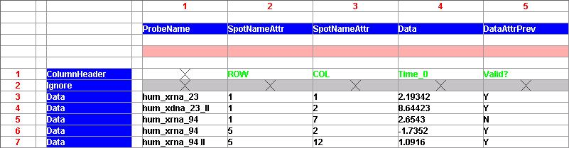
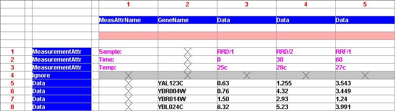

This plugin imports data from a plain text file.
The file can be in any of the encodings supported by Java, including ASCII and several types of 8 and 16 bit Unicode encodings.
Any type of column-oriented data can be loaded, for example:
ROW COL Time_0 Valid Time_10 Valid
hum_xrna_23 1 1 2.193427 Y 1.151119 Y
hum_xdna_23_II 1 2 8.64423 N -1.922 Y
hum_xrna_94 1 7 2.6543 Y +1.4226 Y
hum_xrna_94 5 2 -1.73525 Y -1.24396 Y
hum_xrna_94 II 5 12 1.0916 Y -8.66144 N
The columns can be delimited by space, commas or TAB characters.
Missing numerical values can be signified by an empty column on the row, or by a user-specified text string.
Files compressed using GZIP can be loaded directly without decompressing them first (the filename must have a ".gz" or ".zip" extension.
Data is extracted from the file by tagging each of the rows and columns to indicate what type of data they contain (or whether they should be ignored). There are three methods by which the rows and columns can be tagged:
Several examples are provided to illustrate the various ways in which data can be extracted files.
Two lines of controls at the top of the panel are used to select the source file and determine the basic parsing options:
Once the file has been loaded, the main panel of the plugin
displays the contents of the file in a table.
The table also
contains some controls which are used to specify how to extract data
from each of the rows and columns:
For each row, the interpreting modes are:
Mode | Frequency | Meaning |
| Ignore | zero or more | do not load extract any data from this row |
| Data | zero or more | extract data values from this row |
| ColumnHeader | zero or one | extract column names from this row |
| MeasurementAttr | zero or one | extract Measurement Attributes from this row |
In this table, Frequency refers to how many times each of the interpreting modes can be used within a file, for example, there can be at most one column marked as "ColumnHeader" but any number of columns marked as "MeasurementAttr".
For each column, the interpreting modes are:
Mode | Frequency | Meaning |
| Ignore | zero or one | do not load (or merge) this column |
| SpotName | zero or one | Spot Names are optional, but must be unique if provided |
| SpotNameAttr | zero or more | an attribute of the corresponding Spot name |
| ProbeName | zero or one | Probe Names |
| ProbeNameAttr | zero or more | an attribute of the corresponding Probe name |
| GeneName | zero or more | Gene Names |
| GeneNameAttr | zero or more | an attribute of the first Gene name on this row |
| Data | one or more | Data columns may only contain numbers, blanks or "NaN"s |
| DataAttrNext | zero or more | an attribute of the next Data column |
| DataAttrPrev | zero or more | an attribute of the previous Data column |
In this table, Frequency refers to how many times each of the interpreting modes can be used within a file, for example, there can be at most one column marked as "SpotName" but any number of columns marked as "SpotNameAttr".
If no column is marked as "SpotName" then artifical names will be generated automatically.
The "SpotNameAttr", "ProbeNameAttr" and "GeneNameAttr" modes allow you to add Name Attributes to each of the types of name.
The "DataAttrNext" and "DataAttrPrev" modes allow you to store Spot Attributes along with the Measurement data. The data type of the Spot Attributes will be determined automatically based on the contents of the column.
The Data Colouring Scheme is used to highlight the different varieties of data in the table.:
At the bottom of the panel are the Commmand Buttons
The QuickSet dialog box contains controls which allow the interpreting mode to be set for a sequence of rows or columns. It also provides a "Save" button which stores the current row and column settings in a file, and a "Load" button which retrieves the settings from a file. The file format for the row and column settings is very simple, and looks like this:
Row 1 Ignore Rows 2 to 7 Data Row 8 Ignore Columns 1 to 4 Ignore Column 5 SpotName Columns 6 to 9 Data
The first example shows how Name Attributes and Spot Attributes can be extracted:

The second example shows how Measurement Attributes can be extracted:
Rows 5 to 8 contains the expression data values and are tagged as "Data".
Column 1 contains the names for the Measurement Attributes, so it is tagged as "MeasAttrName".
Column 2 contains values that will be used as "GeneName".
Columns 3 to 5 contains the expression data values, so they are tagged as "Data".